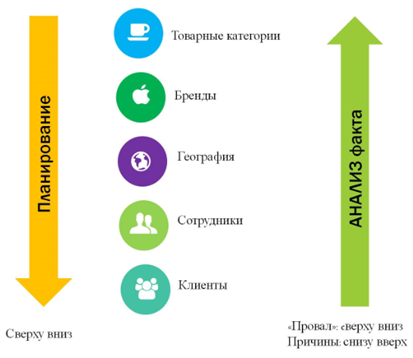

Как прогнозировать продажи
Планируя продажи, надо идти от общего к частному. Например, собственник установил цель: вырасти на 15 процентов или получить 1 млрд руб. Нужно определить, за счет чего и какими способами можно достичь этой цели.

1-й этап. Маркетологи, закупщики, производственники и продавцы совместно обсуждают предварительный вариант плана, высказывают мнения. Интеграцию всех мнений, результатов анализа внешних и внутренних факторов берет на себя кто-то один: интегратор. Обычно интегратором становится директор по продажам.
2-й этап. Интегратор переводит формирование плана на следующий уровень: устанавливает объем продаж по брендам, товарным категориям, каналам продаж. Затем – план по географии продаж. В зависимости от специфики компании можно начинать с планирования по регионам, а затем переходить к плану по брендам и каналам продаж. Этот вариант плана уже можно презентовать акционерам и собственникам.
Пример второго этапа плана
Компания производит молоко, кефир, йогурты и сметану. Интегратор закладывает в план производство 100 тонн молока, 200 тонн йогурта, 100 тонн кефира и 100 тонн сметаны. Затем идет планирование по брендам. По молоку под брендом № 1 произведем 50 тонн молока, под брендом № 2 – 15, а под брендом № 3 – 35. Далее очередь плана по географии: на Северо-западе мы будем продавать 20 процентов, в Центральном федеральном округе в 50 процентов и пр.
3-й этап. На третьем этапе план нужно распределить по сотрудникам. Эффективнее привязывать план к должностям, а не к конкретным сотрудникам: работники меняются. Однако если есть стабильная первоклассная команда, можно планировать и по фамилиям. Для каждой должности или конкретного сотрудника надо установить план по брендам, товарным категориям и клиентам.
Как анализировать проблемы
Анализировать возникающие в процессе проблемы нужно в обратном порядке. Например, вы анализируете промежуточные показатели и видите: план по молоку проваливается. Первый шаг: оценка клиентов, которым компания продает молоко. Клиенты закрылись, обанкротились? Предположим, с клиентами все в порядке. Второй шаг: технология работы сотрудника. Выполняет ли он все регламенты, работает полное количество часов, не болеет?
Как оценить реалистичность показателей
Дагмара Иванова, коммерческий директор компании «Связной», рекомендует использовать четыре уровня планирования.
Годовое планирование. Анализируем внутренние и внешние факторы, которые могут повлиять на план продаж. Внутренние факторы: новые партнерские соглашения, расширение сотрудничества с брендами и пр. Внешние: динамика развития рынков товаров и услуг, динамика потребительского поведения, изменение доли покупок в кредит, насыщенность сегментов рынка.
Краткосрочное планирование делим на помесячное, подекадное и ежедневное. Мы учитываем внутренние и внешние факторы, анализируем большее количество данных, которые характерны для конкретного магазина или группы торговых точек. Задача краткосрочного планирования — распределить годовой план с учетом возможных изменений и поведения внешней среды.
Помесячный план. Учитываем динамику спроса потребителей на федеральном и региональном уровнях. Для любой товарной группы на каждый месяц в году мы знаем целевой объем продаж и целевой объем прибыли компании в зависимости от различных факторов. В том числе сезонности, сроков выхода новинки или появления услуги и пр.
План учитывает возможные форс-мажорные ситуации (например, если закроется торговый центр, где работает магазин), факторы сезонности, достаточность сотрудников и другие параметры.
Подекадный план. Оцениваем эффективность федеральных или региональных акций и продажи товаров в настоящий момент. Например, продажи новинки в первые недели выше, чем в последующие дни, — этот фактор будет влиять на план магазина. Цель подекадного планирования — распределение нагрузки на магазин или канал продаж в рамках временного интервала. Цель дробится на несколько составляющих, и таким образом мы страхуем себя от неожиданных спадов продаж.
Ежедневное планирование. Если мы видим, что продажи продукта или категории товаров растут посуточно, понимаем, что магазин может продавать больше в ближайшие дни. Мы разработали проект «Ситуационная комната» — систему онлайн-реагирования на факторы, которые влияют на работоспособность магазинов, объем и качество продаж, наличие и развитие персонала. Создали ее самостоятельно на базе мессенджера Telegram.
Система указывает конкретному сотруднику или магазину на фактор, который мешает выполнять план, и предлагает варианты решения. «Ситуационная комната» не решает проблему — она экономит время. Если магазин сталкивается со сложностями в работе, продавцы могут быстро с ними справиться.
Как корректировать план
Корректировать план необходимо, если по результатам план-фактного анализа видно, что компания отклоняется на 20 процентов в плюс или минус. 20 процентов - среднее значение, которое вывел лектор на основе опыта работы с клиентами. Для вашей компании показатель может быть другим: 50 процентов или 5 процентов. Проанализируйте ситуацию за последние несколько лет и попробуйте определить это значение. О том, что план скорректирован, необходимо оповестить всех участников: закупки, производство, маркетинг.
Чтобы суметь оперативно и без потерь корректировать план, важно учесть два момента.
- Знание периода переналадки оборудования. Какой у компании есть резерв, если возникает срочная необходимость изменить план. Например, погода резко изменилось, стало жарко, вырос спрос на мороженое. Реально ли за три дня произвести дополнительные 50 тонн? Другой пример: компания выиграла тендер, на который и не рассчитывала, и теперь в срок нужно выполнить обязательства и перед новым клиентом, и перед старыми;
- Контроль динамики цен на сырье. Если резко подорожало сырье, а компания вовремя не отреагировала, она потеряла маржу.
Как вовремя реагировать на изменения в реализации плана
Поквартальное планирование помогает вовремя делать закупки и распоряжаться свободными средствами. Основа расчетов – формула Радмило Лукича, которую он описал в книге «Управление продажами»:
П = В × 1,0 + О × 0,5 + М × 0,1,
где П — взвешенный прогноз;
В — возможная сделка;
О — ожидаемая сделка;
М — маловероятная сделка.
Перед тем как начать планирование, решите, кого отнести к категории постоянных клиентов со 100-процентной вероятностью сделки. Учитывайте данные предыдущих периодов и статистику по рынку. Если клиент совершает покупку в 80 – 100 процентах случаев, отнесите его к категории В. Если реже — к категории О. Если вы не работали с заказчиком — к категории М.
Если относите клиента к категории В, то планируемый объем продаж умножайте на единицу, то есть считайте, что сделка произойдет с вероятностью 100 процентов. Если к категории О, то полагайте, что сделка состоится в вероятностью 50 процентов, и умножайте данные на 0,5. Когда относите заказчика к категории М, считайте, что вероятность сделки — не более 10 процентов. Поэтому планируемый объем продаж умножайте на 0,1.
Методику можно использовать в любых отраслях. Если вы продаете товар поштучно, то ведите планирование в единицах продукции, если оказываете услуги — в рублях.
Гибкое планирование
Гибкое планирование отличается от классического планирования продаж лишь ежемесячным подведением итогов и ежемесячной же корректировкой планов. Руководитель отдела продаж собирает продавцов, отдел закупок, маркетинг и производство и обсуждает результаты месяца: «Почему мы провалились?» или «За счет чего перевыполнили план?». Задача не найти виноватых, а разобраться в причинах и составить план действий.